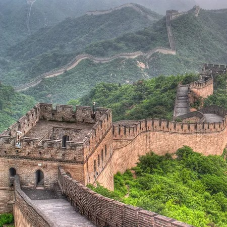
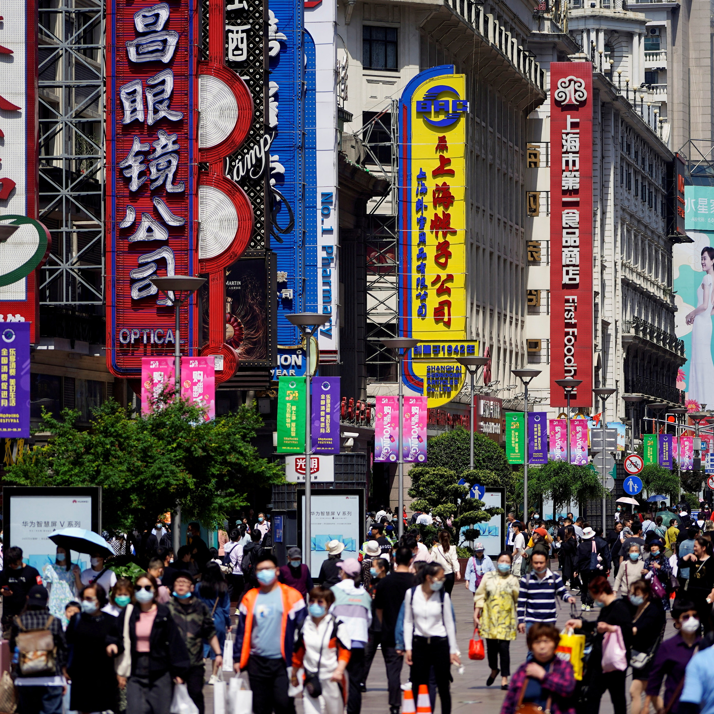

China
From the Great Wall's Grandeur to Guilin's Enchanting Karst Landscapes
My journey through China began in Beijing, the majestic capital city, where I was immediately immersed in the country's rich history and culture. The grandeur of the Forbidden City and the sheer scale of Tiananmen Square left an indelible impression. I could feel the weight of centuries within the ancient city's walls.
 No visit to China is complete without experiencing the Great Wall. My trek along a less-touristy section allowed me to savor the serenity and grandeur of this ancient wonder. Ascending steep staircases and walking along the wall's formidable battlements, I marveled at the breathtaking vistas of the rolling hills and rugged terrain. The Great Wall stood as a testament to human ingenuity and determination.
Traveling to Xi'an, I was transported back in time as I stood before the awe-inspiring Terracotta Army. Thousands of intricately crafted statues guarded the tomb of China's first emperor, Qin Shi Huang. Each warrior bore a unique expression, and the attention to detail was astounding. Exploring the city's ancient city wall and Muslim Quarter offered glimpses into Xi'an's rich history and vibrant culture.
My journey continued to Guilin, renowned for its breathtaking karst landscapes. A Li River cruise took me through a postcard-perfect panorama of limestone peaks reflected in the calm waters. The tranquil journey allowed me to soak in the natural beauty that has inspired Chinese poets and artists for centuries. Exploring the Reed Flute Cave, I marveled at the illuminated stalactites and stalagmites, creating an otherworldly atmosphere. The intricately lit formations seemed like an ancient subterranean art gallery.
 Shanghai greeted me with its futuristic skyline dominated by the Oriental Pearl Tower and the Jin Mao Tower. Walking along the Bund, I marveled at the harmonious blend of modern skyscrapers and colonial-era architecture. Exploring the narrow lanes of the Old Town, I encountered centuries-old tea houses and traditional markets, providing a stark contrast to the bustling cityscape.
Venturing to Zhangjiajie National Forest Park, I found myself in the surreal landscapes that inspired James Cameron's "Avatar." Hiking among the towering sandstone pillars and lush greenery, I felt like I had stepped into another world. The thrilling experience of walking on the glass-bottomed Zhangjiajie Grand Canyon Glass Bridge offered breathtaking views and an adrenaline rush.
My journey concluded in Hong Kong, a vibrant urban oasis where East meets West. Exploring the bustling streets of Kowloon and the tranquil gardens of Victoria Peak, I experienced the city's dynamic contrasts. Visiting Lantau Island, I hiked to the Tian Tan Buddha, a symbol of serenity and spirituality. The panoramic views from the summit were awe-inspiring.
As I reflect on my journey across China, I am captivated by the country's timeless allure. From the grandeur of the Great Wall to the terracotta warriors of Xi'an, the karst landscapes of Guilin to the futuristic skyline of Shanghai, the surreal landscapes of Zhangjiajie to the urban oasis of Hong Kong, China's diversity is its greatest treasure.
Join me in my future travels as I continue to explore the captivating regions of Asia and Oceania, each offering its own unique blend of beauty and cultural richness. Until next time, keep your wanderlust alive and your heart open to the wonders of the world. 再见!